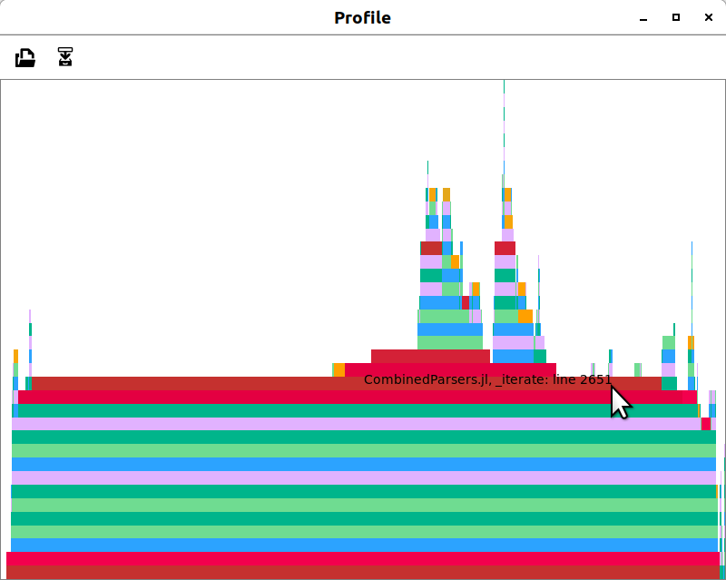

BSON
BSON is a efficient compressed json-like data encoding. This BSON specification is copied verbatim from http://bsonspec.org/spec.html. The original document uses pseudo-BNF syntax, this document uses rearranged but otherwise quite similar syntax
using CombinedParsersThe Notes contain information for reassembling the parsed part of the byte array into a JSON-like structure. This document adds the julia functions to the parser. The result document is a pure julia BSON parser.
Specification Version 1.1
BSON is a binary format in which zero or more ordered key/value pairs are stored as a single entity. We call this entity a document.
The following grammar specifies version 1.1 of the BSON standard. We've written the grammar using a CombinedParsers syntax. Valid BSON data is represented by the document non-terminal.
Basic Types
The following basic types are used as terminals in the rest of the grammar. Each type must be serialized in little-endian format.
byte = Bytes(1,UInt8) # (8-bits)
int32 = Bytes(4,Int32) # (32-bit signed integer, two's complement)
int64 = Bytes(8,Int64) # (64-bit signed integer, two's complement)
uint64 = Bytes(8,UInt64) # (64-bit unsigned integer)
double = Bytes(8,Float64) # (64-bit IEEE 754-2008 binary floating point)
using DecFP
decimal128 = Bytes(16,Dec128) # (128-bit IEEE 754-2008 decimal floating point)16 Bytes::DecFP.Dec128
Non-terminals
The following specifies the rest of the BSON grammar. Note that quoted strings represent terminals, and should be interpreted with C semantics (e.g. "\x01" represents the byte 0000 0001).
@syntax t = Sequence("\\x", integer_base(16,2,2)) do v
CharIn(convert(UInt8,v[2]))
end
element = Either{Any}(Any[])
e_list = Repeat(element)Also note that we use the * operator as shorthand for repetition (e.g. ("\x01"*2) is "\x01\x01"). When used as a unary operator, * means that the repetition can occur 0 or more times.
* here is replaced with Repeat.
BSON Document. int32 is the total number of bytes comprising the document.
@syntax document = Sequence(int32, e_list, t"\x00")[2]🗄 Sequence[2] |> with_name(:document)
├─ 4 Bytes::Int32
├─ |...* Either |> Repeat
└─ [0] CharIn
::Array{Any,1}
Zero or more modified UTF-8 encoded characters followed by '\x00'. The (byte*) MUST NOT contain '\x00', hence it is not full UTF-8.
@syntax cstring = map(String,Repeat_until(byte, t"\x00"))
@syntax e_name = map(Symbol,cstring) # Key name🗄 Sequence[1] |> map(String) |> map(Symbol) |> with_name(:cstring) |> with_name(:e_name) ├─ (?>🗄*) Sequence[2] |> Repeat |> Atomic │ ├─ (?!🗄) NegativeLookahead │ │ └─ [0] CharIn │ └─ 1 Bytes::UInt8 └─ [0] CharIn ::Symbol
String - The int32 is the number bytes in the (byte*) + 1 (for the trailing '\x00'). The (byte*) is zero or more UTF-8 encoded characters.
@inline string_until_before(v) = Bytes{String}(v-1)
@syntax lstring = (after(string_until_before, String, int32) * t"\x00")[1]🗄 Sequence[1] |> with_name(:lstring) ├─ 🗄 FlatMap │ ├─ 4 Bytes::Int32 │ └─ string_until_before └─ [0] CharIn ::String
Binary - The int32 is the number of bytes in the (byte*).
@syntax subtype = Either((
t"\x00", # Generic binary subtype
t"\x01", # Function
t"\x02", # Binary (Old)
t"\x03", # UUID (Old)
t"\x04", # UUID
t"\x05", # MD5
t"\x06", # Encrypted BSON value
t"\x80", # User defined
))
@syntax binary = after(Vector{UInt8}, int32) do v
subtype * Bytes(v,Vector{UInt8})
end🗄 FlatMap |> with_name(:binary)
├─ 4 Bytes::Int32
└─ #3
::Array{UInt8,1}
@syntax code_w_s = int32 * lstring * document # Code w/ scope — Deprecated
for e in [
:float64 => t"\x01" * e_name * double, # 64-bit binary floating point
:string => t"\x02" * e_name * lstring, # UTF-8 string
:embedded => t"\x03" * e_name * document, # Embedded document
:array => t"\x04" * e_name * document, # Array
t"\x05" * e_name * binary, # Binary data
t"\x06" * e_name * (Always() => missing), # Undefined (value) — Deprecated
t"\x07" * e_name * Bytes(12,Vector{UInt8}), # ObjectId
:boolean => t"\x08" * e_name * Either(
t"\x00" => false, # Boolean "false"
t"\x01" => true), # Boolean "true"
:UTC => t"\x09" * e_name * map(int64) do v
v |> Millisecond |> Dates.UTInstant |> DateTime
end, # UTC datetime
t"\x0A" * e_name * (Always() => nothing), # Null value
:regex => t"\x0B" * e_name * map(v->Regex(v...),cstring * cstring),
# Regular expression - The first cstring is the regex pattern,
# the second is the regex options string.
# Options are identified by characters, which must be stored in alphabetical order.
t"\x0C" * e_name * lstring * Bytes(12,Vector{UInt8}), # DBPointer — Deprecated
t"\x0D" * e_name * lstring, # JavaScript code
t"\x0E" * e_name * lstring, # Symbol. — Deprecated
t"\x0F" * e_name * code_w_s, # JavaScript code w/ scope — Deprecated
t"\x10" * e_name * int32, # 32-bit integer
t"\x11" * e_name * uint64, # Timestamp
:int => t"\x12" * e_name * int64, # 64-bit integer
t"\x13" * e_name * decimal128, # 128-bit decimal floating point
t"\xFF" * e_name, # Min key
t"\x7F" * e_name, # Max key
]
pairp = parser(e)
push!(element,
map(if result_type(pairp) <: Tuple && fieldcount(result_type(pairp))==3
v->v[2]=>v[3]
else
v->v[2]=>v[3:end]
end,
pairp))
endNotes
- Array - The document for an array is a normal BSON document with integer values for the keys, starting with 0 and continuing sequentially. For example, the array ['red', 'blue'] would be encoded as the document {'0': 'red', '1': 'blue'}. The keys must be in ascending numerical order.
- UTC datetime - The int64 is UTC milliseconds since the Unix epoch.
- Timestamp - Special internal type used by MongoDB replication and sharding. First 4 bytes are an increment, second 4 are a timestamp.
- Min key - Special type which compares lower than all other possible BSON element values.
- Max key - Special type which compares higher than all other possible BSON element values.
- Generic binary subtype - This is the most commonly used binary subtype and should be the 'default' for drivers and tools.
- The BSON "binary" or "BinData" datatype is used to represent arrays of bytes. It is somewhat analogous to the Java notion of a ByteArray. BSON binary values have a subtype. This is used to indicate what kind of data is in the byte array. Subtypes from zero to 127 are predefined or reserved. Subtypes from 128-255 are user-defined.
- \x02 Binary (Old) - This used to be the default subtype, but was deprecated in favor of \x00. Drivers and tools should be sure to handle \x02 appropriately. The structure of the binary data (the byte* array in the binary non-terminal) must be an int32 followed by a (byte*). The int32 is the number of bytes in the repetition.
- \x03 UUID (Old) - This used to be the UUID subtype, but was deprecated in favor of \x04. Drivers and tools for languages with a native UUID type should handle \x03 appropriately.
- \x80-\xFF "User defined" subtypes. The binary data can be anything.
- Code w/ scope - Deprecated. The int32 is the length in bytes of the entire codews value. The string is JavaScript code. The document is a mapping from identifiers to values, representing the scope in which the string should be evaluated.
Testing examples
using Dates
testdata = Dict(:a => 1, :b => 3.0, :c => "yeay", :d => true)Dict{Symbol,Any} with 4 entries:
:a => 1
:b => 3.0
:d => true
:c => "yeay"The BSON.jl package provides an optimized and feature-rich BSON serializer and parser.
using BSON
bson("test.bson", testdata)
s = read("test.bson")
parse(document,s, log=true)4-element Array{Any,1}:
:a => 1
:b => 3.0
:d => true
:c => "yeay"Aim of this page is demonstrating the straightforward implementation of a BSON parser. The parser is untested and not feature-complete regarding subtypes etc. Parsing logic can be plugged into the elements with map.
Benchmarking
using BenchmarkToolsBSON has an optimized parser, used for comparison
@benchmark BSON.parse(IOBuffer(s))BenchmarkTools.Trial: memory estimate: 1.50 KiB allocs estimate: 19 -------------- minimum time: 1.374 μs (0.00% GC) median time: 1.607 μs (0.00% GC) mean time: 2.027 μs (15.59% GC) maximum time: 1.064 ms (99.31% GC) -------------- samples: 10000 evals/sample: 10
The CombinedParser matching is slower.
@benchmark match(document,s)BenchmarkTools.Trial: memory estimate: 3.64 KiB allocs estimate: 96 -------------- minimum time: 9.878 μs (0.00% GC) median time: 10.476 μs (0.00% GC) mean time: 11.299 μs (0.00% GC) maximum time: 145.978 μs (0.00% GC) -------------- samples: 10000 evals/sample: 1
Transformation is doing too much work currently - lazy access optimizations are planned.
@benchmark parse(document,s)BenchmarkTools.Trial: memory estimate: 14.84 KiB allocs estimate: 317 -------------- minimum time: 49.024 μs (0.00% GC) median time: 52.582 μs (0.00% GC) mean time: 58.048 μs (6.39% GC) maximum time: 12.802 ms (97.99% GC) -------------- samples: 10000 evals/sample: 1
Profiling
Profiling reveals that most time is lost due to the Either state type.
# using Profile
# Profile.clear()
# f(n,a...) = for _ in 1:n; match(a...); end
# @profile f(100000,document,s);
# using ProfileView
# ProfileView.view() This is looked into, I have a strong hunch that the allocation can be removed so CombinedParser can come close to BSON.jl.
Dates
Seems, reading a document written with BSON works. BSON.jl has a nonstandard way with Dates...
testdata = Dict(:a => 1, :b => 3.0, :c => "yeay", :d => true, :e => now())
bson("test.bson", testdata)
s = read("test.bson")
parse(document,s, log=true)5-element Array{Any,1}:
:a => 1
:b => 3.0
:d => true
:e => Any[:tag => "struct", :type => Any[:tag => "datatype", :params => Any[], :name => Any[Symbol("0") => "Dates", Symbol("1") => "DateTime"]], :data => Any[Symbol("0") => Any[:tag => "struct", :type => Any[:tag => "datatype", :params => Any[Symbol("0") => Any[:tag => "datatype", :params => Any[], :name => Any[Symbol("0") => "Dates", Symbol("1") => "Millisecond"]]], :name => Any[Symbol("0") => "Dates", Symbol("1") => "UTInstant"]], :data => Any[Symbol("0") => Any[:tag => "struct", :type => Any[:tag => "datatype", :params => Any[], :name => Any[Symbol("0") => "Dates", Symbol("1") => "Millisecond"]], :data => Any[Symbol("0") => 63752358966066]]]]]]
:c => "yeay"This parser does not do any of the magic in BSON.jl to reassemble into julia types. BSON dates work though:
let d = now()
Any[:e => d] ==
parse(document,UInt8[0x10,0x0,0x0,0x0, # we actually ignore the 4 byte length of the vector
0x09,0x65,0x0,reinterpret(UInt8,[Dates.value(d)])...,0x0], log=true)
endtrue
This page was generated using Literate.jl.